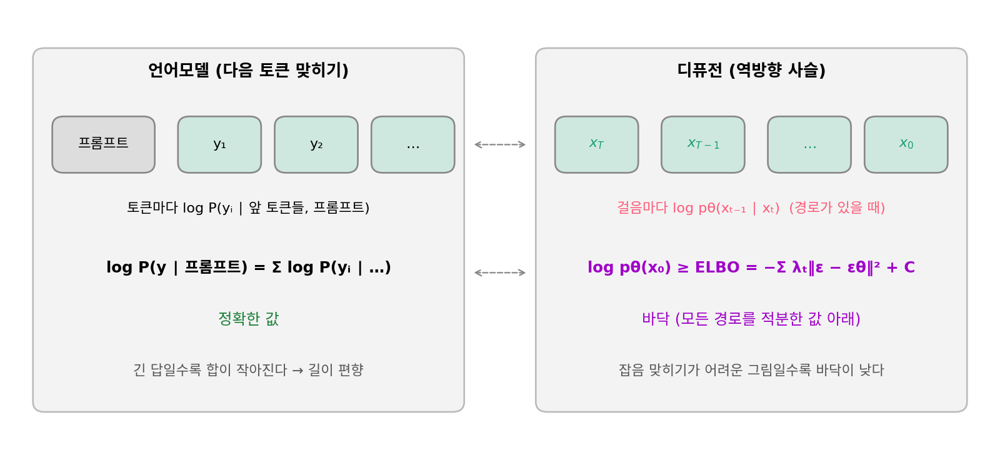

ELBO 의 차이: 그림의 로그확률 대신 바닥끼리 견주기
걸음의 로그확률은 그 그림을 뽑은 경로를 기록해 두어야 쓸 수 있다. 그런데 사람이 골라 둔 선호 기록에는 완성된 그림 쌍만 있다. 선호한 그림 xw와 고르지 않은 그림 xl(w 와 l 은 이긴 쪽 winner, 진 쪽 loser 의 머리글자)이 있을 뿐, 그 그림을 만든 경로는 어디에도 없다. 언어모델의 DPO 는 이런 쌍만으로 배운다. 학습하는 모델이 선호한 답의 로그확률을 학습 전 기준 모델(레퍼런스 모델)보다 얼마나 올렸는지에서, 고르지 않은 답에 대해 같은 값을 뺀 마진을 키운다.
디퓨전에서는 네 로그확률 가운데 어느 것도 잴 수 없다. 잴 수 있는 것은 그 아래 받친 바닥 ELBO 다. 잡음 섞기를 고정한 사슬에서 ELBO 는 걸음마다 가중치 λt 를 붙인 잡음 맞히기 오차의 합에 마이너스를 붙인 것(더하기 상수)이었다. 천장(로그우도)과 바닥 사이에는 틈이 있다. 네 값을 바닥으로 바꿔 넣으면 마진에는 무엇이 섞여 들어올까?

역사: 이미 쌓인 85만 쌍으로
2023년 11월 월리스(Bram Wallace)와 동료들은 「직접 선호 최적화로 디퓨전 모델 맞추기」에서 디퓨전용 DPO 를 내놓았다. 언어모델 DPO 를 처음 낸 사람 가운데 하나인 라파일로프(Rafael Rafailov)도 저자였다. 이들의 고민은 이미 쌓인 데이터였다. Pick-a-Pic 에는 같은 프롬프트로 만든 두 그림 가운데 사용자가 고른 기록이 비긴 쌍을 빼고 85만 1,293쌍(프롬프트 5만 8,960개) 있었다. 이 쌍으로 Stable Diffusion 1.5 와 SDXL-1.0 의 기본 모델을 고쳤다. 고친 SDXL 기본 모델은 사람 평가에서 보기 좋음과 프롬프트를 따르는 정도 모두 원래 SDXL-1.0 기본 모델보다, 그리고 다듬기 모델까지 덧붙인 더 큰 SDXL-1.0 보다도 크게 나았다고 논문 요약은 적었다.
네 걸음 사슬에서 틈 재기
네 걸음 사슬로 돌아가자. 1차원이라 그림의 로그 밀도를 격자로 적분해 정확히 잴 수 있고, ELBO 는 순방향 사슬을 200만 번 뽑아 잰다. 레퍼런스 모델은 ±1 이 반반인 데이터에서 가장 잘 배운 신경망, 학습한 모델은 +1 의 비중이 0.6 인 데이터에서 가장 잘 배운 신경망으로 둔다. +1 쪽 그림을 조금 더 좋아하도록 고친 모델이다. 그림 쌍은 두 가지로 잡았다. 봉우리 두 개(xw = 1, xl = −1)와, 봉우리 하나와 골짜기(xw = 1, xl = 0)다.
| 모델 · 그림 | 로그 밀도 (천장) | ELBO (바닥) | 틈 |
|---|---|---|---|
| 학습한 모델 · 1 | 0.010 | −0.473 | 0.482 |
| 학습한 모델 · −1 | −0.290 | −0.804 | 0.514 |
| 학습한 모델 · 0 (골짜기) | −4.846 | −9.729 | 4.883 |
| 레퍼런스 · 1 | −0.129 | −0.622 | 0.493 |
| 레퍼런스 · −1 | −0.129 | −0.621 | 0.492 |
| 레퍼런스 · 0 (골짜기) | −4.835 | −9.715 | 4.880 |
틈은 그림에 따라 크게 다르다. 봉우리에 있는 그림은 0.5 안팎인데 골짜기의 그림은 4.88 로 열 배쯤이다. 걸음이 넷뿐이라 데이터가 드문 곳에서는 바닥이 천장보다 한참 아래에 있다. 그러니 그림 둘의 바닥을 바로 견주면 틈의 차이가 그대로 섞인다. 그런데 마진에서는 같은 그림을 두 모델이 잰 값끼리 먼저 뺀다. 골짜기 그림의 틈은 학습한 모델에서 4.883, 레퍼런스에서 4.880 으로 거의 같다. 이 덕에 마진은 이렇게 된다.
| 그림 쌍 | 참 마진 (로그 밀도로) | 바닥으로 잰 마진 |
|---|---|---|
| 봉우리 1 대 봉우리 −1 | 0.300 | 0.332 |
| 봉우리 1 대 골짜기 0 | 0.150 | 0.163 |
바닥으로 잰 마진은 참 마진을 10% 안쪽으로 따라간다. 틈이 그림마다 열 배씩 달라도, 같은 그림에서 두 모델의 틈이 비슷하면 네 항의 「차이의 차이」에서 지워진다.
「바닥이니까 크기 순서는 지켜진다」가 까닭이 아니다. 바닥은 천장의 순서를 지켜 준다는 보장이 없다. 같은 모델 계열, 같은 잡음 일정, 너무 멀지 않은 두 모델이라 틈이 네 항에서 비슷하게 움직이고, 차이를 취할 때 지워진다는 것이 까닭이다. 보장은 아니다. 학습한 모델을 +1 비중 0.95 처럼 멀리 옮기면 봉우리 쌍의 마진은 참 2.144, 바닥으로 2.429 로 어긋남이 13% 로 커진다. 그림 쌍의 로그확률 차이를 이렇게 잡음 맞히기 오차의 차이로 대신하는 DPO 를 Diffusion-DPO (그림 쌍의 로그확률 차이를 ELBO, 곧 잡음 맞히기 오차의 차이로 대신하는 DPO / Diffusion-DPO)라 한다.
ML에서: 쌍마다 걸음 하나, 잡음 하나
실제 손실은 위 마진을 그대로 쓰지 않는다. 쌍마다 걸음 t 하나와 잡음 ε 하나를 뽑아, 두 그림에 같은 잡음을 섞고 학습하는 모델과 레퍼런스가 각각 잡음을 얼마나 잘 맞히는지를 잰다. 선호한 그림에서는 레퍼런스보다 잘 맞히고 고르지 않은 그림에서는 덜 맞히는 쪽으로, 네 오차의 「차이의 차이」에 배율을 곱해 시그모이드 손실에 넣는다. ELBO 의 평균을 걸음 하나로 어림한 셈이라 값은 흔들리지만 평균은 맞다. 논문 부록은 로그 시그모이드 바깥의 평균을 안으로 옮기면서 젠센 부등식을 한 번 더 써, 실제로 줄이는 것이 원래 손실의 위쪽 경계라는 것도 밝혔다. 배율은 2000~5000 이 잘 들었고, Stable Diffusion 1.5 에는 2000, SDXL 에는 5000 을 썼다.
문제 5. 영점이 어긋난 체중계
민준의 실제 몸무게는 70.0 kg, 서연은 55.0 kg 이다. (가) 모든 사람에게 0.4 kg 을 더 읽는 체중계 하나로 둘을 재면 몸무게 차이는? (나) 민준은 그 체중계로, 서연은 0.3 kg 을 덜 읽는 다른 체중계로 재면? (다) 무게의 1% 를 더 읽는 체중계로 둘을 재고, 한 달 뒤 민준 71.0 kg, 서연 54.0 kg 일 때 다시 잰다. 「두 사람의 한 달 변화의 차이」는 참값과 얼마나 다른가?

(가)는 70.4 − 55.4 = 15.0, 영점 오차가 지워져요. (나)는 70.4 − 54.7 = 15.7 이라 0.7 틀려요.

(다)는 체중계가 사람마다 다르게 틀려요. 무거운 민준 학생에게 더 많이요. 그래도 지워질까요?

틀리는 양이 사람마다 다르면 안 지워지는 거 아니에요?

한 사람 안에서 먼저 빼 봐. 민준은 70.70 에서 71.71 로 1.01 늘었고, 서연은 55.55 에서 54.54 로 1.01 줄었어. 차이는 2.02. 참값은 1.0 − (−1.0) = 2.0 이니까 0.02 만 틀려.

틀리는 양이 사람마다 달라도, 한 사람에게서 한 달 사이 거의 같으면 그 사람의 변화에서 지워져요. 마진이 같은 그림을 두 모델로 잰 값을 먼저 빼는 것과 같은 구조예요.

학과마다 채점이 짠 정도가 달라도, 같은 학과 안에서 1학기와 2학기 점수 변화를 보면 그 짠 정도는 빠지는 거네요.
문제 6. 모양이 다른 두 모델
네 걸음 사슬에서 학습한 모델을 이번에는 「가장 잘 배운 잡음 예측을 0.8배로 줄인 신경망」으로 바꾼다. 레퍼런스는 그대로다. 그림 쌍은 xw = 1, xl = 0 이다.
모델 · 그림 로그 밀도 ELBO 0.8배 모델 · 1 −0.220 −0.697 0.8배 모델 · 0 −4.536 −7.273 레퍼런스 · 1 −0.129 −0.622 레퍼런스 · 0 −4.835 −9.715 (가) 참 마진과 바닥으로 잰 마진은? (나) 어느 틈이 지워지지 않았는가? (다) 같은 쌍에서 비중 0.6 모델은 왜 잘 지워졌을까?
참 마진은 (−0.220 + 0.129) − (−4.536 + 4.835) = −0.091 − 0.299 = −0.390 이에요. 바닥으로는 (−0.697 + 0.622) − (−7.273 + 9.715) = −0.075 − 2.442 = −2.517. 둘 다 음수니까 방향은 맞았네요. 됐죠?

마진은 손실에서 배율을 곱해 시그모이드에 들어가요. 크기가 여섯 배 넘게 다르면 어떻게 될까요?

아… 손실이 「이 쌍은 이미 아주 잘 갈라 놨다」고 보고 거의 밀지 않겠네요. 방향만 맞으면 되는 게 아니었어요.
(나)는 틈을 계산하면 보여. 그림 1 은 0.8배 모델 0.477, 레퍼런스 0.493 으로 비슷한데, 골짜기 그림 0 은 0.8배 모델 2.737, 레퍼런스 4.880 이야. 같은 그림인데 모델이 바뀌니 틈이 2.1 이나 달라졌어.
(다)는요? 비중 0.6 모델은 레퍼런스와 무엇이 같았죠?

0.6 모델은 데이터 비중만 바꾼 「가장 잘 배운」 신경망이라, 사슬의 모양은 레퍼런스와 거의 같아요. 0.8배 모델은 신경망 출력의 크기 자체를 바꿔서 걸음마다 덜 끌어당기니까, 골짜기를 지나는 경로들을 대하는 방식이 달라졌어요. 틈이 비슷하다는 전제가 깨진 거예요.
그래요. 틈이 지워지려면 「같은 모델 계열, 너무 멀지 않은 두 모델」이라는 단서가 필요해요. DPO 가 레퍼런스에서 멀어지지 않게 묶어 두는 것이 여기서도 쓸모가 있어요.

체중계를 중간에 다른 걸로 바꿔 버리면 한 달 변화도 못 믿는 거랑 같네요.